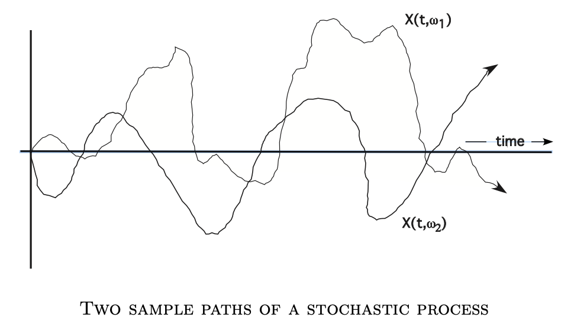

[Evans Intro SDE]2·Probability Theory
参考书籍：An Introduction to Stochastic Differential Equations Version 1.2 by Lawrence C. Evans. link
本章快速回顾概率测度的理论基础。
基本定义
定义（\(\sigma\)-代数）：设 \(\Omega\) 为一个集合，\(\mathcal U\) 为 \(\Omega\) 的一些子集的集合，满足：
- \(\emptyset,\Omega\in\mathcal U\)
- 若 \(A\in\mathcal U\)，则 \(A^c\in\mathcal U\)
- 若 \(A_1,A_2,\ldots\in\mathcal U\)，则 \(\bigcup_{k=1}^\infty A_k,\,\bigcap_{k=1}^\infty A_k\in\mathcal U\)
称 \(\mathcal U\) 为 \(\Omega\) 上的一个 \(\sigma\)-代数。
由定义可知，\(\mathcal U\) 对取余、可数并和可数交封闭。
定义（概率测度）：设 \(\mathcal U\) 是集合 \(\Omega\) 上的 \(\sigma\)-代数，若映射 \(P:\mathcal U\to[0,1]\) 满足：
- \(P(\emptyset)=0,\,P(\Omega)=1\)
- 若 \(A_1,A_2,\ldots\in\mathcal U\)，则 \(P(\bigcup_{k=1}^\infty A_k)\leq\sum_{k=1}^\infty P(A_k)\)
- 若 \(A_1,A_2,\ldots\in\mathcal U\) 且互不相交，则 \(P(\bigcup_{k=1}^\infty A_k)=\sum_{k=1}^\infty P(A_k)\)
则称 \(P\) 为 \(\mathcal U\) 上的一个概率测度。
容易验证，设 \(A,B\in\mathcal U\)，若 \(A\subseteq B\)，则 \(P(A)\leq P(B)\).
定义（概率空间）：上述定义的三元组 \((\Omega,\mathcal U,P)\) 称作概率空间。
术语：称 \(A\in\mathcal U\) 为一个事件，\(\omega\in\Omega\) 为一个样本点，\(P(A)\) 为事件 \(A\) 的概率。
定义（几乎一定）：若某命题在除了测度为零的事件以外都成立，则称其几乎一定成立，记作 “\(\text{a.s.}\)”.
定义（Borel \(\sigma\)-代数）：包含 \(\mathbb R^n\) 中所有开子集的最小的 \(\sigma\)-代数称作 Borel \(\sigma\)-代数，记作 \(\mathcal B\).
我们可以直观上认为 \(\mathcal B\) 的元素都是 \(\mathbb R^n\) 中“好”的子集。
定义（随机变量）：设 \((\Omega,\mathcal U,P)\) 为一个概率空间，设有映射 \(\mathbf X:\Omega\to\mathbb R^n\)，若对任意 \(B\in\mathcal B\)，都有： \[ \mathbf X^{-1}(B)\in\mathcal U \] 则称 \(\mathbf X\) 为 \(n\) 维随机变量，且是 \(\mathcal U\)-可测的。
记号：依惯例一般直接写 \(\mathbf X\) 而非 \(\mathbf X(\omega)\)；另外，将 \(P(\mathbf X^{-1}(B))\) 记作 \(P(\mathbf X\in B)\). 通常用大写字母表示随机变量，粗体表示映射是向量值映射。
引理：设 \(\mathbf X:\Omega\to\mathbb R^n\) 是随机变量，那么： \[ \mathcal U(\mathbf X)\coloneqq\{\mathbf X^{-1}(B)\mid B\in\mathcal B\} \] 是一个 \(\sigma\)-代数，称作 \(\mathbf X\) 生成的 \(\sigma\)-代数。
可以认为 \(\mathcal U(\mathbf X)\) 包含了“有关 \(\mathbf X\) 的全部信息”。
定义（随机过程）：随机变量集合 \(\{\mathbf X(t)\mid t\geq0\}\) 称作一个随机过程。
定义（样本路径）：对任一 \(\omega\in\Omega\)，映射 \(t\mapsto \mathbf X(t,\omega)\) 称作对应的样本路径。
直观上，如果我们进行一次实验，观察 \(\mathbf X(\cdot)\) 的取值，我们就得到了对应某一固定样本 \(\omega\in\Omega\) 的一条样本路径。如果进行多次实验，就能观察到多条样本路径。反过来，固定时间步 \(t\)，那么多次实验在 \(t\) 时刻的取值就是随机变量 \(\mathbf X(t)\) 的若干取值。

期望与方差
基于测度的积分：设 \((\Omega,\mathcal U,P)\) 是一个测度空间，\(X\) 是一个实值随机变量，定义 \(X\) 的积分为：
若 \(X\) 是形如 \(\sum_{i=1}^ka_i\chi_{A_i}\) 的简单随机变量： \[ \int_\Omega X\mathrm dP\coloneqq\sum_{i=1}^ka_iP(A_i) \]
若 \(X\) 是一个非负随机变量： \[ \int_\Omega X\mathrm dP\coloneqq \sup_{\begin{gather}Y\leq X\\Y\text{simple}\end{gather}}\int_\Omega Y\mathrm dP \]
若 \(X\) 是一个随机变量，设 \(X^+=\max(X,0),\,X^-=\max(-X,0)\)，则 \(X=X^+-X^-\)，因此定义： \[ \int_\Omega X\mathrm dP\coloneqq\int_\Omega X^+\mathrm dP-\int_\Omega X^-\mathrm dP \]
进一步地，设 \(\mathbf X:\Omega\to\mathbb R^n\) 是一个向量值随机变量，\(\mathbf X=(X^1,X^2,\ldots,X^n)\)，则： \[ \int_\Omega \mathbf X\mathrm dP=\left(\int_\Omega X^1\mathrm dP,\int_\Omega X^2\mathrm dP,\ldots,\int_\Omega X^n\mathrm dP\right) \] 定义（期望）：随机变量 \(\mathbf X\) 的期望定义为： \[ \mathbb E\mathbf X=\int_\Omega\mathbf X\mathrm dP \] 定义（方差）：随机变量 \(\mathbf X\) 的方差定义为： \[ V(\mathbf X)=\int_\Omega|\mathbf X-\mathbb E\mathbf X|^2\mathrm dP=\mathbb E[|\mathbf X-\mathbb E\mathbf X|^2]=\mathbb E[|\mathbf X|^2]-|\mathbb E\mathbf X|^2 \] 其中 \(|\cdot|\) 表示欧式范数。
定理（Chebyshev 不等式）：设 \(\mathbf X\) 是一随机变量，\(1\leq p<\infty\)，则： \[ P(|\mathbf X|\geq\lambda)\leq\frac{1}{\lambda^p}\mathbb E[|\mathbf X|^p],\quad\forall \lambda>0 \] 证： \[ \mathbb E[|\mathbf X|^p]=\int_\Omega|\mathbf X|^p\mathrm dP\geq\int_{\{|\mathbf X|\geq\lambda\}}|\mathbf X|^p\mathrm dP\geq\lambda^pP(|\mathbf X|\geq\lambda) \] 证毕。
分布函数
设 \((\Omega,\mathcal U,P)\) 为一个概率空间，\(\mathbf X:\Omega\to\mathbb R^n\) 为一个随机变量。
记号：设 \(x=(x_1,\ldots,x_n)\in\mathbb R^n\)，\(y=(y_1,\ldots,y_n)\in\mathbb R^n\)，则记 \(x\leq y\) 表示 \(x_i\leq y_i,\forall i=1,\ldots,n\).
定义（分布函数）：随机变量 \(\mathbf X\) 的分布函数 \(F_\mathbf X:\mathbb R^n\to[0,1]\) 定义为： \[ F_\mathbf X(x)\coloneqq P(\mathbf X\leq x),\quad\forall x\in\mathbb R^n \] 定义（联合分布）：设 \(\mathbf X_1,\ldots,\mathbf X_m:\Omega\to\mathbb R^n\) 是随机变量，它们的联合分布函数 \(F_{\mathbf X_1,\ldots,\mathbf X_m}:(\mathbb R^n)^m\to[0,1]\) 定义为： \[ F_{\mathbf X_1,\ldots,\mathbf X_m}(x_1,\ldots,x_m)\coloneqq P(\mathbf X_1\leq x_1,\ldots,\mathbf X_m\leq x_m),\quad\forall x_i\in\mathbb R^n,\,i=1,\ldots,m \] 定义（密度函数）：设 \(\mathbf X:\Omega\to\mathbb R^n\) 是一个随机变量，\(F=F_\mathbf X\) 是其分布函数。若存在非负可积函数 \(f:\mathbb R^n\to\mathbb R\) 使得： \[ F(x)=F(x_1,\ldots,x_n)=\int_{-\infty}^{x_1}\cdots\int_{-\infty}^{x_n}f(y_1,\ldots,y_n)\mathrm dy_n\cdots\mathrm dy_1 \] 则称 \(f\) 为 \(\mathbf X\) 的密度函数。可以证明： \[ P(\mathbf X\in B)=\int_B f(x)\mathrm dx,\quad\forall B\in\mathcal B \] 引理：设 \(\mathbf X:\Omega\to\mathbb R^n\) 是一个随机变量，密度函数为 \(f\). 设 \(g:\mathbb R^n\to\mathbb R\)，\(Y=g(\mathbf X)\) 可积，则： \[ \mathbb E(Y)=\int_{\mathbb R^n}g(x)f(x)\mathrm dx \]